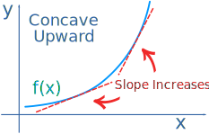
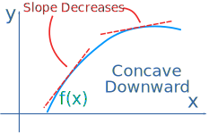
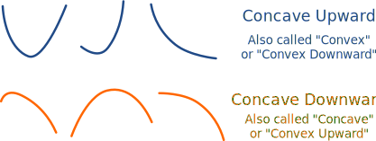
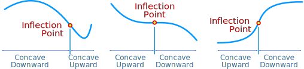
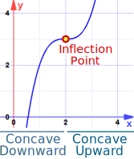

Inflection Points
An Inflection Point is where a curve changes from Concave upward to Concave downward (or vice versa)
So what is concave upward / downward ?
| Concave upward is when the slope increases: |  | |
| Concave downward is when the slope decreases: |  |
Here are some more examples:

Learn more at Concave upward and Concave downward.
Finding where ...
So our task is to find where a curve goes from concave upward to concave downward (or vice versa).

Calculus
Derivatives help us!
The derivative of a function gives the slope.
The second derivative tells us if the slope increases or decreases.
- When the second derivative is positive, the function is concave upward.
- When the second derivative is negative, the function is concave downward.
And the inflection point is where it goes from concave upward to concave downward (or vice versa).
Example: y = 5x3 + 2x2 − 3x

Let's work out the second derivative:
- The derivative is y' = 15x2 + 4x − 3
- The second derivative is y'' = 30x + 4
And 30x + 4 is negative up to x = −4/30 = −2/15, positive from there onwards. So:
And the inflection point is at x = −2/15
A Quick Refresher on Derivatives
In the previous example we took this:
y = 5x3 + 2x2 − 3x
and came up with this derivative:
y' = 15x2 + 4x − 3
There are rules you can follow to find derivatives. We used the "Power Rule":
- x3 has a slope of 3x2, so 5x3 has a slope of 5(3x2) = 15x2
- x2 has a slope of 2x, so 2x2 has a slope of 2(2x) = 4x
- The slope of the line 3x is 3
Another example for you:
Example: y = x3 − 6x2 + 12x − 5
The derivative is: y' = 3x2 − 12x + 12
The second derivative is: y'' = 6x − 12
And 6x − 12 is negative up to x = 2, positive from there onwards. So:
And the inflection point is at x = 2:
